|
IV 歷史舊城區之吃 |
||
| 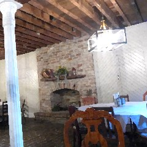 |
Cafe M 河畔充滿法式風情的一個小角落，早午餐熱門，戶外座位也總是坐滿享受日光的人們。 |
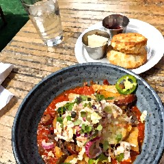 |
|
Debi's Restaurant 空間舒適，價格親民，南方料理加海味，實在好吃。舊址是阿甘正傳Jenny工作的地方！ |
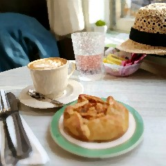 |
The Collins Quarter 早午餐專賣，擺盤美麗也美味，舊城區有兩家分店，而且菜單竟然還不太一樣。 |
| 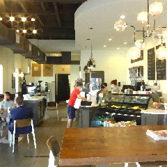 |
Peregrin Rooftop Lounge 位於精品酒店Perry Lane頂樓的酒吧，線上預約，在夕陽時刻俯瞰大橋和城景入夜。 |
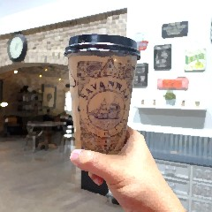 |
|
Blends a Coffee Boutique 在熱鬧街道上超然獨立的一角，明亮現代的空間，選咖啡是用國旗選，輕食也不錯。 |
Savannah Coffee
Roasters 光踏進咖啡館，越過紅磚拱頂的大挑高，光是視覺已然心曠神怡，咖啡好喝，外帶杯史上第一美。 |
|
| 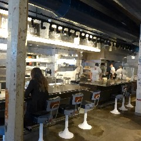 |
Leopold's Ice Cream 一年四季永遠在排隊的冰淇淋老店，走濃醇香路線，店裡也有很多有趣基於老闆豐富人生經歷的陳列展示。 |
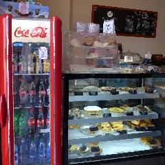 |
|
The Grey Market,
Savannah 吃不到The Grey，來這邊系出同源。善用線上點餐，拜訪時機得當的話，每日限量烤雞和牛排十分誘人。 |
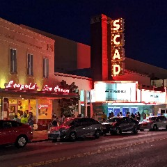 |
The Little Crown by Pie Society 喬治亞州裡最小的英國pub，只有八個座位。外帶回家用烤箱復活，水蜜桃派無敵優秀！ |
| 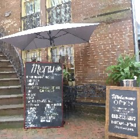 |
Savannah Seafood Shack 位於舊城區中心優秀地理位置，真心推薦必來此處外帶，最後一口都會吮指的美味。 |
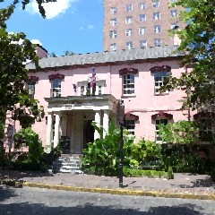 |
|
Mrs. Wilkes Dining Room 道地南方料理午餐專賣人氣店，吃到飽轉變成分量超大的外帶。點餐一人份的份量可以吃四餐不誇張。 |
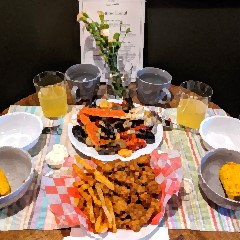 |
The Olde Pink House 數一數二的歷史名店，建築和美食的饗宴，非常值得拜訪。把口袋準備好，一定要提前訂位，品嘗非常有創意高端的精緻南方料理。裡面不亞於藝廊博物館的館藏，由骨董商Jim Williams修繕整修設計，地下室酒吧還有以他命名的調酒。 |
|
還沒有機會拜訪的口袋名單 |
The Lady
and Sons 人氣主廚阿姨有自己的電視節目、出版過許多食譜，選擇在此定居開了這家吃到飽。 |
The Grey 年度美食榜上常客，跟粉紅老屋一樣，要吃一定要把口袋準備好，提前訂位。 |